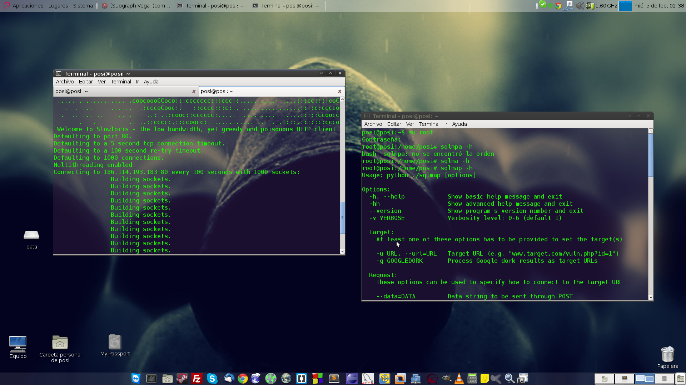
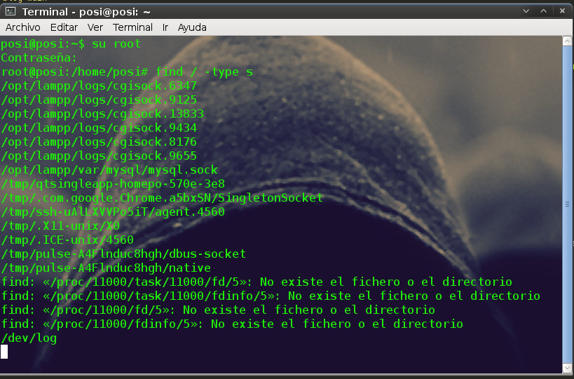

Un Informatico con Linux
Blog Itodosoft-Sec

Después de la pérdida de todos mis proyectos, a raíz del SteamOS hahahaha, había formateado todo mi www, :( por eso hace un buen tiempo no escribia, ya de nuevo con mi mente un poco más centrada decidí escribir algo que me ocurrió hace poco, andaba buscando trabajo navegando por la web encontre uno que me llamó mucho la atención, era para tester de seguridad informática, en fin pedían mucha experiencia y tarjeta profesional y un certificado de ethical hacking, de los cuales no tengo nada hehehehe, solo como 3 años de estar sentado en frente de esta mi maquina, bueno eso a uds no les interesa xD, entonces dije cómo adquiero mi tarjeta profesional, pedi ayuda a san google, me envió a una pagina que no voy a decir el nombre. Entre a dicha pagina mire la info de que se necesitaba y dije bueno, es solo dinero y unos papeles, me dio curiosidad la url era algo como http://dominio.directorio.php?id=45, cabe resaltar que es una gov.co heheheheh, hay mismo abri una terminal y mire si era inyectable el parametro, con mi navaja suiza sqlmap
Ver Post.
Introduccion
Este es un video con fines educativos. SSLstrip nos permite sniffar usuarios y contraseñas encriptadas en HTTPS. Esto lo hace realizando un ataque MITM entre el servidor y nuestro objetivo conectandose al servidor mediante HTTP (sin encriptar) en lugar de HTTPS (encriptado) con lo que los datos son visibles. Algunos ejemplos de páginas que utilizan esta encriptacion son Gmail o tuenti
Ver Post.

El dia de hoy me encontré con un error en el “emma”, que es mi software para la gestión de bases de datos el error era el siguiente '/ var / run / mysqld / mysqld.sock' (2) ' a continuacion te cuento como lo solucione con un poco de ayuda que encontre en http://stackoverflow.com/
Ver Post.
Introducción
Este es un video con fines educativos. Se trata de una vulnerabilidad para la ejecución remota de código. Un atacante que aprovechara esta vulnerabilidad podría tomar el control completo de un sistema afectado de forma remota. En los sistemas basados en Microsoft Windows 2000, Windows XP y Windows Server 2003, un atacante podría aprovechar esta vulnerabilidad sobre RPC sin autenticación y ejecutar código arbitrario. Si falla el intento de aprovecharse de esta vulnerabilidad, también podría dar lugar a un bloqueo en Svchost.exe. Si se produce dicho bloqueo, afectará al servicio del servidor. El servicio del servidor proporciona compatibilidad con el uso compartido de archivos, impresoras y canalizaciones con nombre a través de la red. La causa de esta vulnerabilidad es el servicio del servidor, que no controla correctamente las solicitudes de RPC especialmente elaboradas para ello.
Ver Post.
Jonathan Posada

Tecnologo Analista desarrollador de software.
Intereses seguridad informatica, linux, software libre.